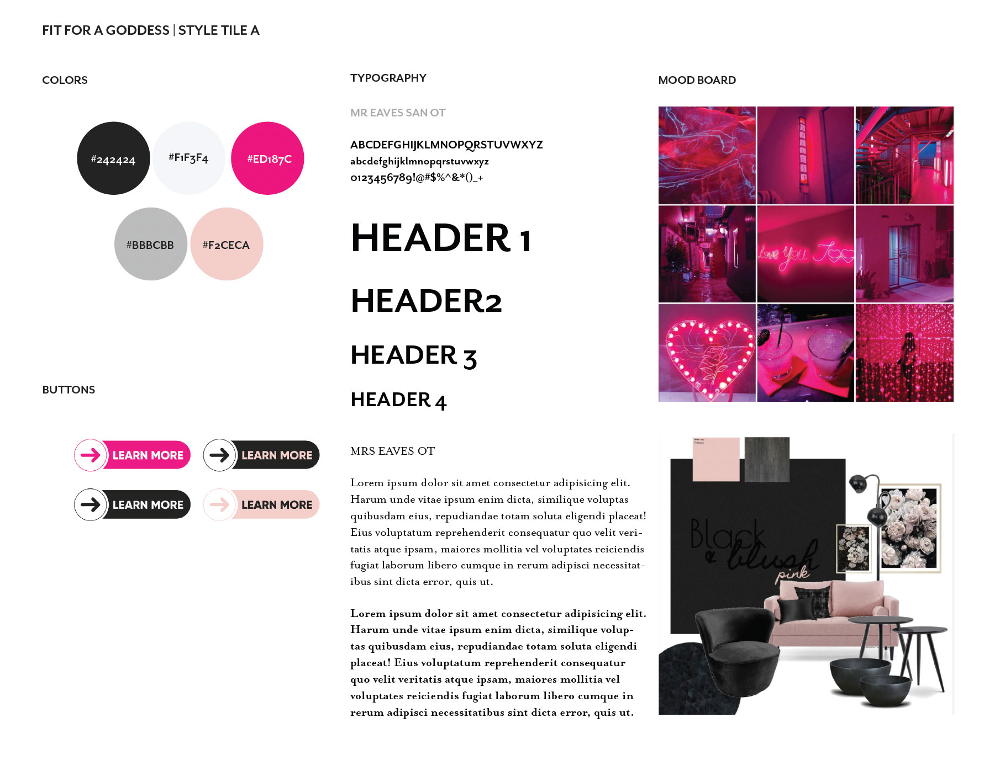
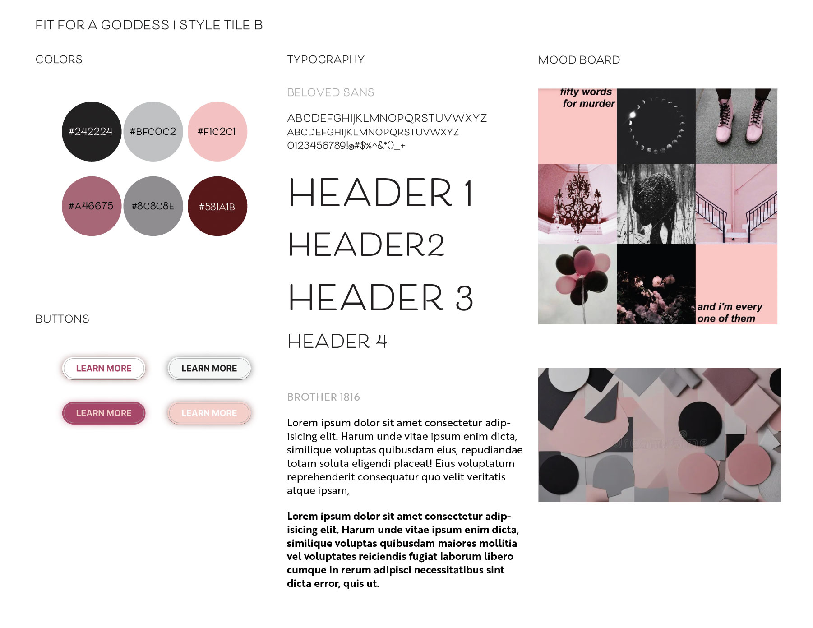
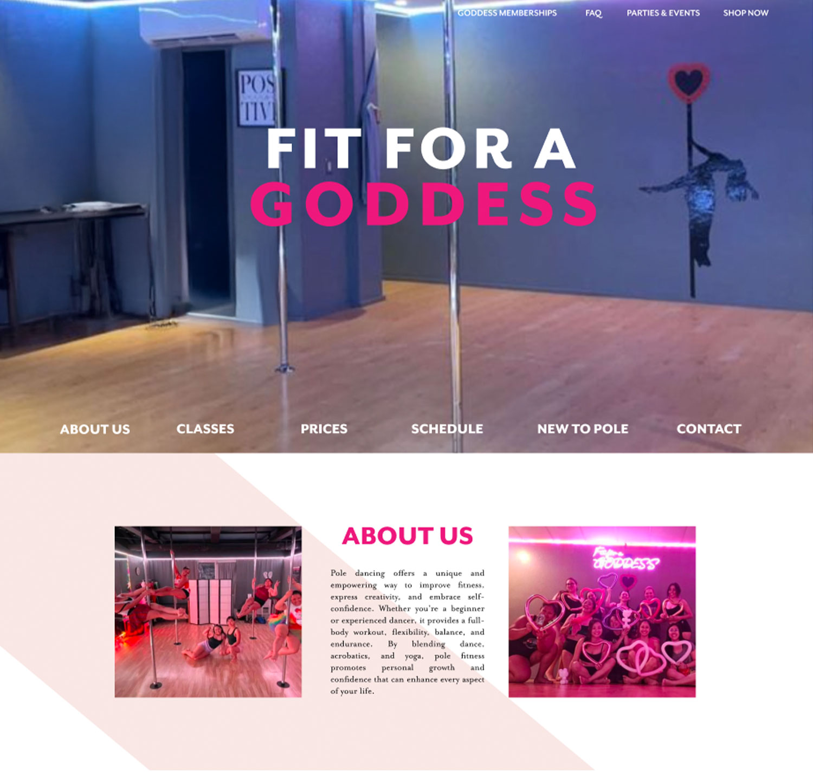
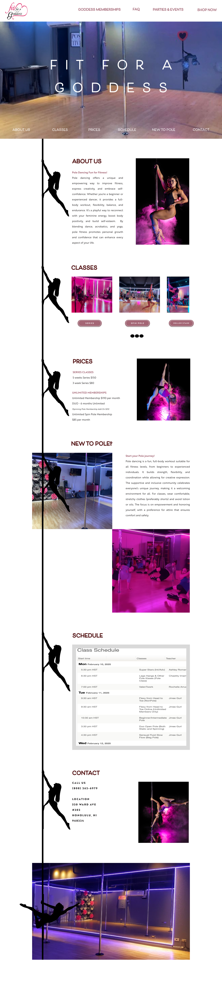
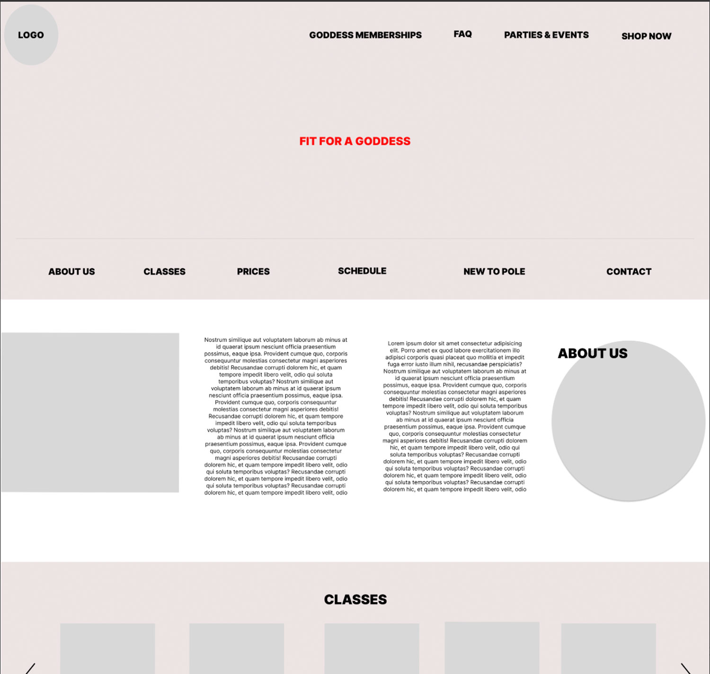
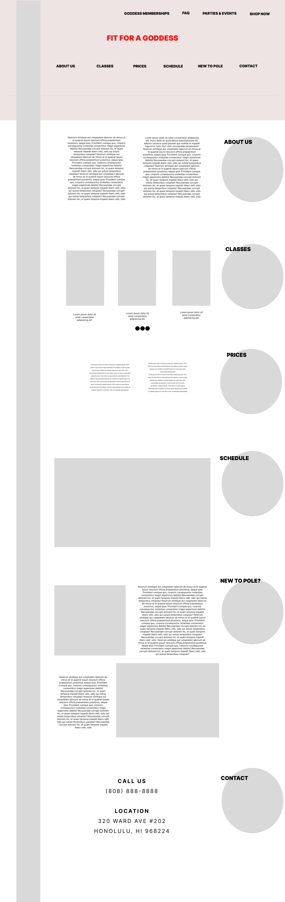
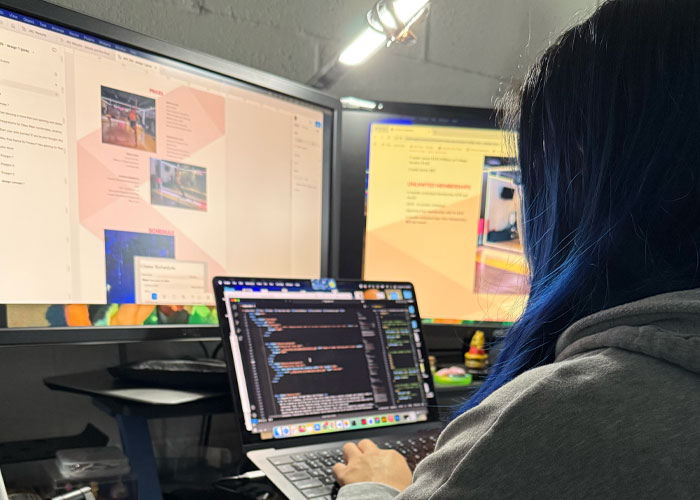

Web Design

fit for a goddess
Client: JKC Wellness
Project Type: UI Design, Front-End Web Development
Competencies: Typography, Photography, Videos, Layout, HTML, CSS, JavaScript
Software: VS Code, Figma, PhotoShop, Illustrator, CapCut
braindstroming process
Being a client of Fit For a Goddess gave me firsthand insight into the brand and its audience. I learned that the owner values a sensual and empowering vibe while inspiring women to feel confident and their best. For the website, I wanted to reflect this energy with subtle motion—like the flowing ribbon in the background—while including videos of actual classes to showcase the experience. At the same time, I focused on keeping the design friendly, approachable, and easy to navigate, with clear, simple language that makes the offerings immediately understandable. This approach balances the brand's bold, empowering personality with functionality and accessibility for visitors.
type & color

Fit For A Goddess's core colors are hot pink, black, and white. I've introduced light pink and soft gray to reflect the brand's softer, more graceful aesthetic.

I refined the brand palette to evoke a more sophisticated and sultry feel, yet retained the original hues.
Interface & Digital Design
Single-Page Website Wireframes
Ribbon Design
The inspiration for this wireframe is
simplicity and structure.
While pole fitness (dancing) can be free moving; however, lots of the moves and tricks require
precision
and control. For the design, I wanted the ribbon in the background to move subtly, giving a sense of
flow
while maintaining a clean and organized layout.
Pole Design
In this wireframe, the range of classes offered shaped
the
visual
direction. The circular
elements on the right represent lyra (aerial hoop), while the tall rectangle on the left is designed
to
resemble a pole. As the user scrolls, a silhouette of a performer executing pole tricks would move
along
the
pole, reinforcing the class offerings through interactive visuals.
See the full wireframe & design concept
{kind=link}




Front-End Web Development
